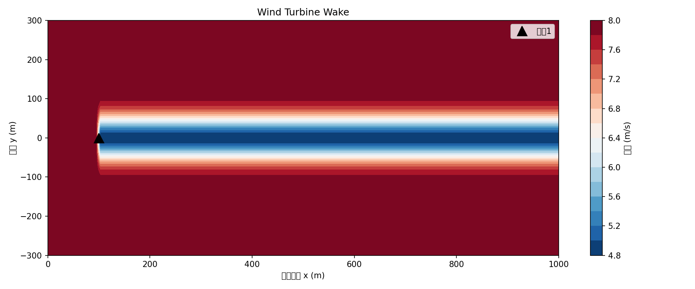
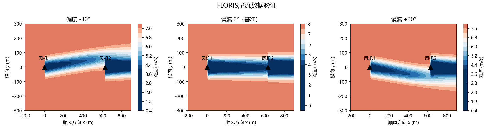
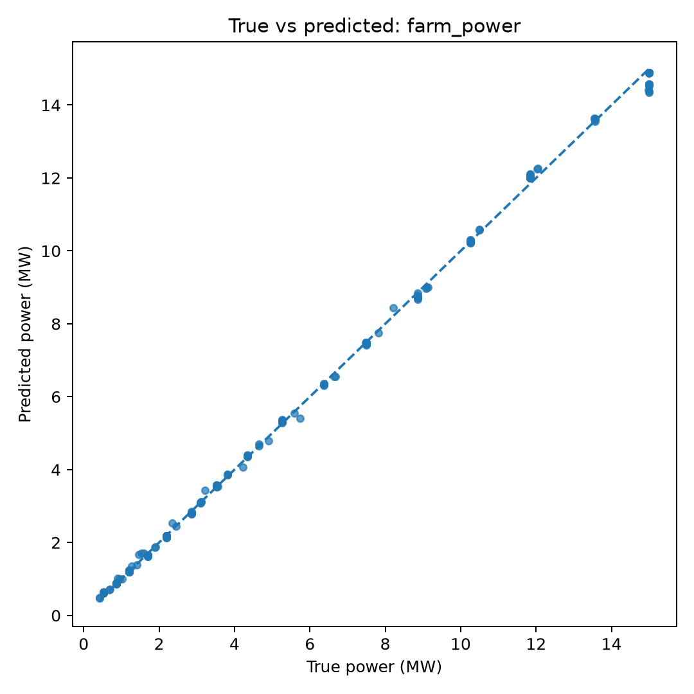
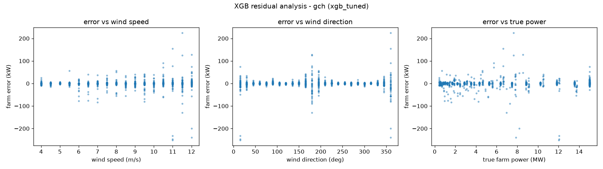

01
功率 — 偏航角曲线
双机布局，固定下游机偏航 0°
风机 1 功率
风机 2 功率
全场总功率
最优偏航角
02
偏航寻优（find_yaw_for_target）
输入风速与目标功率，暴力搜索推荐偏航角–
推荐偏航角 (°)
–
实际总功率 (kW)
–
跟踪误差 (%)
–
偏航 0° 基准 (kW)
接口契约：predict_power(yaw, U_inf) -> (P1, P2) kW
替换真实模型时仅改此函数体，界面层 0 改动。
03
3×3 阵列偏航优化
统一偏航 vs 独立偏航（洪祖名结果）箭头方向 = 各机推荐偏航角（独立策略），颜色 = 单机功率（绿高红低）。未来由洪祖名真实优化器结果覆盖。
04
风玫瑰 — 优化增益
各风向下的功率提升幅度 (%)05
流场可视化
FLORIS 工程尾流模型（占位演示数据）

上：单机组尾流；下：流场校验对比。以下为偏航扫描动画（GIF）：


注：当前流场为田铭雨 FLORIS 工程尾流模型生成的演示数据；申请书所述 Fluent 高保真数据到位后，仅替换图片源即可，界面不变。
06
代理模型精度
厉今飞基线 + 洪祖名 XGBoost 优化

洪祖名在厉今飞 MLP 基线之上做模型选择（XGBoost / GPR / MLP / 两阶段，5-fold CV），最终选定 XGBoost：全场功率 MAE 由 86.5/103.1 kW 降至 7.79 / 10.49 kW（约 11 倍），R² > 0.99996。可视化未来直接加载其
final_models/*.json 即可。07
统一数据接口
与各组的契约（预先固定，降低格式错配风险）# AI 组接口（厉今飞 / 洪祖名提供真实模型）
def predict_power(yaw_angle, U_inf):
# 输入：偏航角(°)，风速(m/s)
# 输出：(P1, P2) 单位 kW
...
return P1, P2
# 优化控制组接口（洪祖名提供真实优化器）
def find_yaw_for_target(target_power, U_inf):
# 输入：目标功率(kW)，风速(m/s)
# 输出：(best_yaw, actual_power, error_pct)
...
return best_yaw, actual_power, error_pct
数据文件来源与替换计划：
•
•
•
• 真实链路：田铭雨 CFD → 袁夫达 NN 训练 → 洪祖名优化 → 我可视化。
•
cases.csv / cases_array.csv：我用 FLORIS 生成的占位数据（generate_data / generate_array_data）。•
optimizer_result.json / array_independent_result.json：我生成的 FLORIS 结果；未来用洪祖名真实优化器结果覆盖，界面数字自动更新。•
fields/ 系列：田铭雨 FLORIS 工程尾流（演示数据）；高保真到位后仅换图。• 真实链路：田铭雨 CFD → 袁夫达 NN 训练 → 洪祖名优化 → 我可视化。
已对齐假期前 PPT 的统一接口规范：
•
•
• 流场统一网格 128×64（x, y, u, v），未来由田铭雨 npz 提供。
•
optimizer_result.json 字段 = wind_speed, original_yaw, recommended_yaw, power_before, power_after, wake_field（前 5 项已落地，wake_field 待田铭雨 CFD 提供后仅换图）。•
cases.csv 最小字段（PPT）= case_id, U_inf, yaw_1, yaw_2, pitch, rpm, power_1, power_2（第一版 pitch/rpm 固定，故暂未含）。• 流场统一网格 128×64（x, y, u, v），未来由田铭雨 npz 提供。
当前所有数据为 FLORIS 占位；接口已固化，待各组提供真实模型/数据时按契约替换，app 界面零改动。